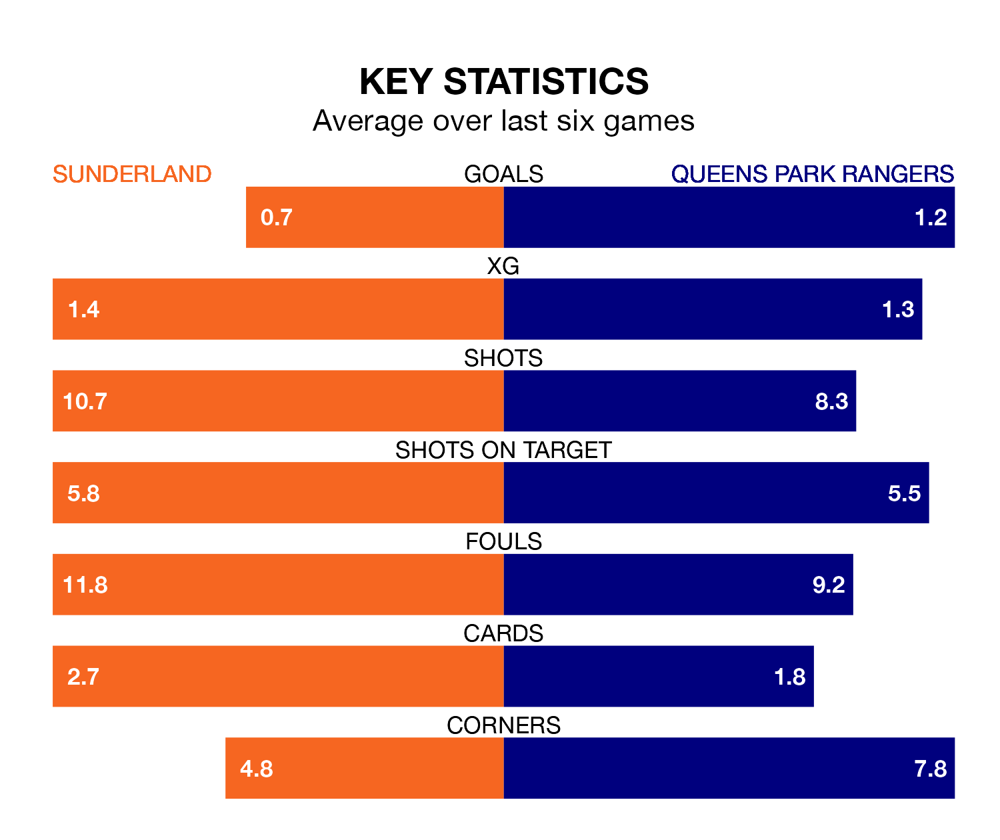

Sunderland welcome Queens Park Rangers to the Stadium of Light on Saturday looking to pick up points to end their six-game losing streak.
Sunderland's struggles have left them with no points from their last six EFL Championship matches, while their opponents have earned 10 from a possible 18.
In the last 10 years, Sunderland and QPR have played each other on nine occasions. They won three each, and they drew three times.
On average, the Black Cats scored 1.2 goals and QPR 1.0 in those matches.
Their last meeting was on September 16, when Sunderland won 3-1 away.
QPR are 20th in the table after 37 games, of which they have won 10 and drawn nine, earning 39 points.
Sunderland are eight places ahead of Rangers in 12th, with 14 wins and five draws putting them on 47 points.
In Jack Clarke, the Black Cats have one of the league's most on-form strikers so far this season. He has notched 15 goals in 33 appearances, to sit fourth in the scoring charts.
His goal rate of one every 195 minutes is much quicker than that of Ilias Chair, the visitors' top scorer with a goal every 599 minutes, and a total of five goals in 35 games.
With 36 goals in 37 games so far this season, QPR are scoring at below the league average rate with 1.0 goals per game. And they are conceding at an average rate, letting in 50 goals at a rate of 1.4 per game.
The home side are also below average scorers, with 1.3 goals per game, compared to a league average of 1.4. They have conceded 1.2 goals per game.
Sunderland's last match was on March 9, a 4-2 loss against Southampton, with Jobe Bellingham and Romaine Lee Mundle getting the goals for the Black Cats.
QPR lost 2-0 against Middlesbrough last time out, also on March 9.
Saturday's match will be refereed by Oliver Langford, who has taken charge of 22 EFL Championship games so far this season, issuing five red cards and booking 74 players. He has awarded two penalties.
The last Sunderland game Langford refereed was a 2-0 home win against Preston North End on January 1. His last QPR match was their 1-0 loss at home against Southampton on December 23.
Updated: 15:10 (UTC), 15/03/24